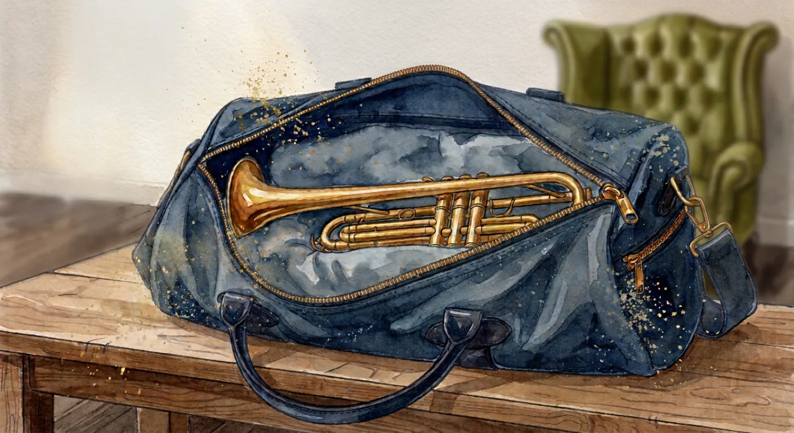

Kinderroman · 2024
Opa und die schiefe Trompete
Eine Geschichte über Zuhören und Zeit.
Eigentlich müsste hier mehr von einem Labyrinth als von einem Haus gesprochen werden, fand Toma, der gerade mit seinen Eltern zu Opa zog. Das Haus war groß, hatte drei Stockwerke und einige Zimmer, in die sich wohl seit Jahren niemand mehr verirrt hatte. Vieles war verstaubt, Kartonschachteln und Koffer in allen möglichen Größen und Formen und ganz besonders die alten Regale, die überfüllt mit Büchern und Fotos aus vergangenen Zeiten waren. Da hätte nicht mal eine Nadel mehr Platz dazwischen gefunden.
Als sich Toma in einen alten olivgrünen Ohrensessel plumpsen ließ, den er in einem Zimmer entdeckt hatte, und sich darin zurücklehnte, fiel ihm oben auf dem Bücherregal eine dunkle Tasche auf, deren goldener Reißverschluss im Licht aufblitzte. Sie war die einzige Tasche zwischen all den kleinen Kartonschachteln. Und weil sie irgendwie nicht zu dieser Schachtelgruppe passte und angezogen von dem Blitzen, holte er sie vom Regal herunter. Er fischte eine Trompete aus der Tasche, bei der ganz fein die Initialen M.M. eingraviert waren. „Die gehört bestimmt Opa“, war sich Toma sicher. Er wusste gar nicht, dass sein Opa Trompete spielte.
„Spielst du mir etwas vor?“, fragte er Opa und hielt ihm die Trompete entgegen. Opa schüttelte den Kopf. „Das ist nicht meine. Ich passe nur auf sie auf.“ „Und wem gehört sie dann?“, wollte Toma wissen. „Einem lieben Menschen“, antwortete Opa leise, „der gerade eine Pause braucht. Aber das verstehst du noch nicht.“ „Vielleicht verstehe ich es ja. Wem gehört sie?“, hakte Toma noch mal nach. Opa fuhr mit seinen dicken Fingern sanft über die eingravierten Buchstaben und flüsterte: „Das ist nicht ganz einfach.“
Nun wollte Toma unbedingt erfahren, was es mit dieser Trompete auf sich hatte?